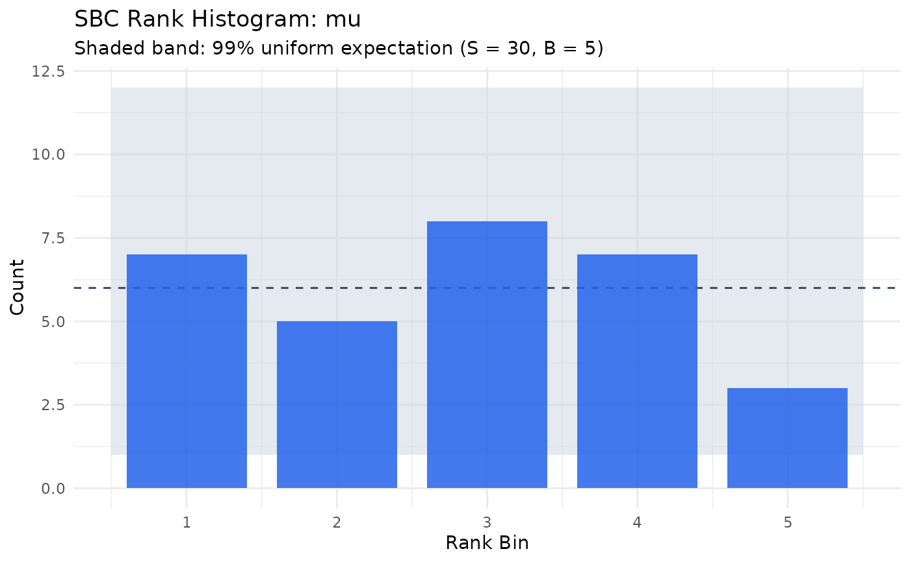

Plot SBC rank histogram with expected uniformity band
Usage
# S3 method for class 'statci_sbc'
plot(x, parameter = NULL, ...)
Arguments
- x
A "statci_sbc" object from audit_sbc().
- parameter
Optional parameter name to plot (defaults to the first).
- ...
Unused.
Value
A ggplot object if ggplot2 is installed, otherwise draws a base
R barplot and returns x invisibly.
Examples
sbc <- audit_sbc(
prior = function() c(mu = rnorm(1, 0, 2)),
dgp = function(th) rnorm(15, mean = th[["mu"]], sd = 1),
posterior_draws = function(y) {
pv <- 1 / (1 / 4 + length(y))
rnorm(49, mean = pv * sum(y), sd = sqrt(pv))
},
n_sim = 30L,
n_bins = 5L,
seed = 42L
)
plot(sbc)
